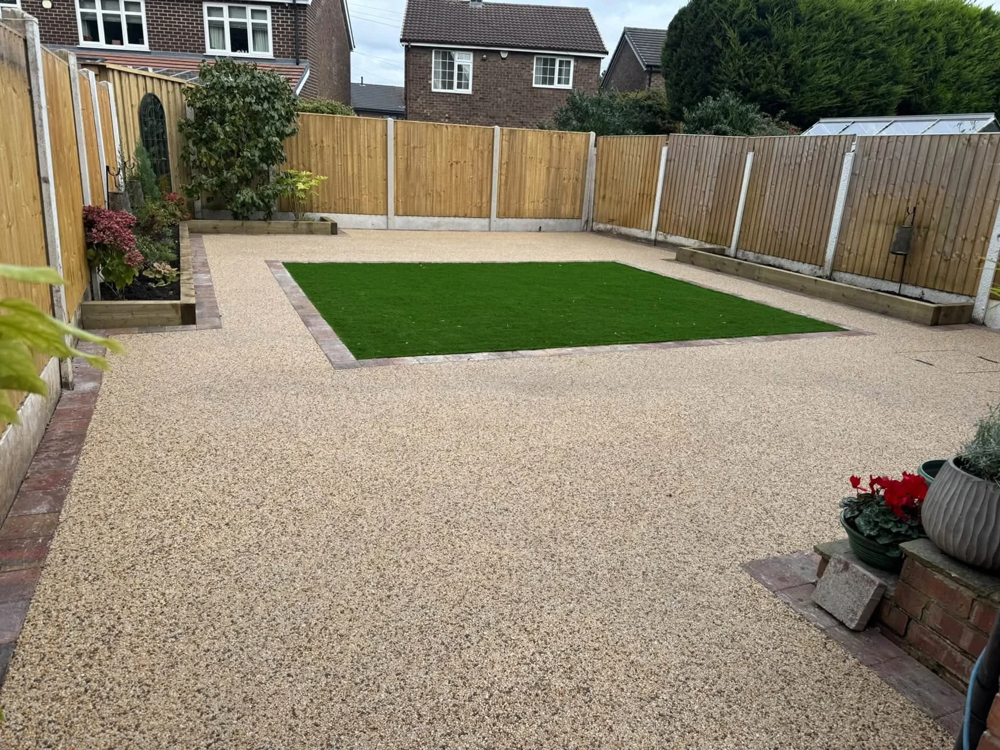
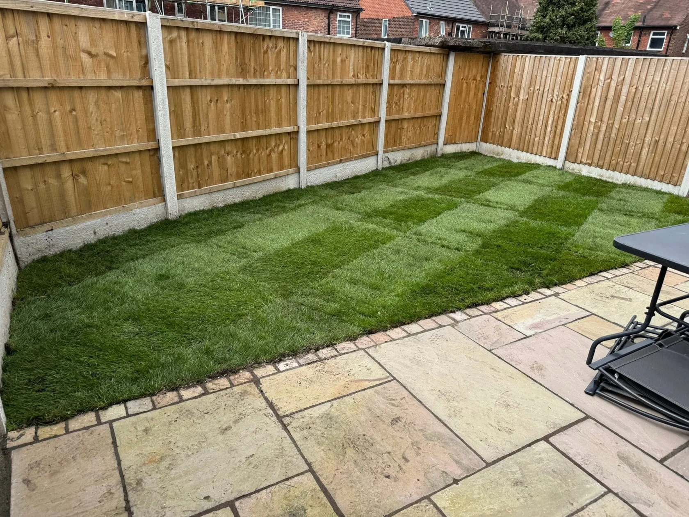

WYTHENSHAWE & SURROUNDING AREAS
Tree work and landscaping.
From canopy to kerb.
Based in Wythenshawe. From tree felling and pruning to patios, driveways and fencing, tell us what you need and where the job is.
BASED IN WYTHENSHAWE
Bring the whole garden together.
From removing a tree to fitting a fence or laying a new patio, we take on individual jobs and projects that need several trades in the garden.
100% recommend · 71 Facebook reviewsSee the Facebook page ↗

PROJECT VIDEOS
See the team at work.
Watch two clips from Manchester Tree and Landscapes Ltd.
See all project photos →PROJECT GALLERY
From tree work to finished gardens.
GOOD TO KNOW
Frequently asked questions
What details help with a quote?
Send your postcode, a short description and a few photos. For a driveway or patio, rough measurements help too.
Do you take on smaller jobs?
Ask us about individual jobs such as pruning, stump grinding, a fence replacement or jet washing.
REQUEST A QUOTE
Tell us about your project.
Include your postcode and a few details. The form opens WhatsApp with a draft ready for you to send. You can attach photos there.